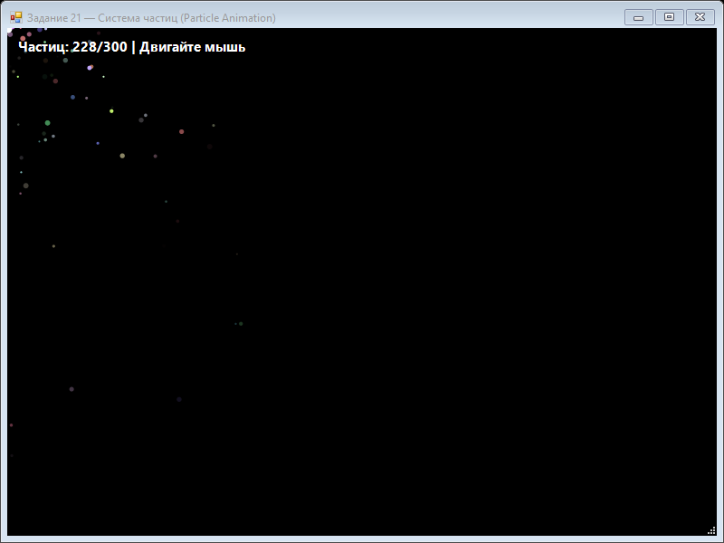

Урок 8.1: Системы частиц и эффекты
📌 Что вы изучите:
- Принцип работы эмиттера частиц
- Параметры частиц: скорость, размер, жизнь
- Гравитация и плавное исчезновение
- Отрисовка полупрозрачных частиц
- Оптимизация большого количества элементов
Система частиц
Система частиц состоит из эмиттера, набора объектов частиц и цикла обновления. Каждая частица хранит позицию, скорость, размер, цвет и время жизни.
private void CreateParticle(float x, float y)
{
particles.Add(new Particle
{
Position = new PointF(x, y),
Velocity = new PointF((float)(rnd.NextDouble() - 0.5) * 6, (float)(rnd.NextDouble() - 1) * 6),
Size = (float)(rnd.NextDouble() * 4 + 2),
Lifetime = rnd.Next(40, 120),
Color = Color.FromArgb(rnd.Next(150, 256), rnd.Next(150, 256), rnd.Next(150, 256))
});
}Плавное исчезновение
Для эффекта затухания используйте альфа-канал, основанный на оставшейся жизни частицы.
📝 Пример задания — система частиц
Эмиттер следует за курсором мыши, создаёт до 500 частиц с гравитацией и затуханием по альфа-каналу:
using System;
using System.Collections.Generic;
using System.Drawing;
using System.Drawing.Drawing2D;
using System.Windows.Forms;
namespace CSharpGraphicsApp
{
public class Task21_ParticleAnimation : Form
{
private class Particle
{
public PointF Position { get; set; }
public PointF Velocity { get; set; }
public Color Color { get; set; }
public float Size { get; set; }
public float Lifetime { get; set; }
public float MaxLifetime { get; set; }
public float Gravity { get; set; }
public float Alpha => (Lifetime / MaxLifetime) * 255;
public void Update()
{
var pos = Position;
pos.X += Velocity.X;
pos.Y += Velocity.Y;
Position = pos;
var vel = Velocity;
vel.Y += Gravity;
Velocity = vel;
Lifetime -= 1;
}
public bool IsAlive => Lifetime > 0;
}
private List<Particle> particles = new List<Particle>();
private Random random = new Random();
private readonly Timer timer = new Timer();
private int emitterX, emitterY;
public Task21_ParticleAnimation()
{
Text = "Задание 21 — Система частиц (Particle Animation)";
Size = new Size(800, 600);
BackColor = Color.Black;
DoubleBuffered = true;
Paint += Form_Paint;
MouseMove += (s, e) => { emitterX = e.X; emitterY = e.Y; };
timer.Interval = 16;
timer.Tick += Timer_Tick;
timer.Start();
FormClosed += (s, e) => timer.Stop();
}
private void Timer_Tick(object sender, EventArgs e)
{
if (particles.Count < 500)
{
for (int i = 0; i < 3; i++)
{
particles.Add(new Particle
{
Position = new PointF(emitterX, emitterY),
Velocity = new PointF(
(float)(random.NextDouble() - 0.5) * 6,
(float)(random.NextDouble() - 1) * 6),
Color = Color.FromArgb(
random.Next(100, 256),
random.Next(100, 256),
random.Next(100, 256)),
Size = (float)(random.NextDouble() * 4 + 2),
MaxLifetime = random.Next(40, 120),
Lifetime = random.Next(40, 120),
Gravity = 0.15f
});
}
}
for (int i = particles.Count - 1; i >= 0; i--)
{
particles[i].Update();
if (!particles[i].IsAlive)
particles.RemoveAt(i);
}
Invalidate();
}
private void Form_Paint(object sender, PaintEventArgs e)
{
e.Graphics.SmoothingMode = SmoothingMode.AntiAlias;
foreach (var p in particles)
{
byte alpha = (byte)Math.Min(255, Math.Max(0, p.Alpha));
using (var brush = new SolidBrush(Color.FromArgb(alpha, p.Color)))
e.Graphics.FillEllipse(brush,
p.Position.X - p.Size / 2,
p.Position.Y - p.Size / 2,
p.Size, p.Size);
}
e.Graphics.FillEllipse(Brushes.White, emitterX - 5, emitterY - 5, 10, 10);
e.Graphics.DrawString($"Частиц: {particles.Count} | двигайте мышью",
new Font("Segoe UI", 11, FontStyle.Bold), Brushes.White, 10, 10);
}
}
}Практическое задание
- Реализуйте эмиттер, который создаёт новые частицы каждый тик.
- Добавьте гравитацию и уменьшение скорости.
- Рисуйте частицы с помощью FillEllipse и полупрозрачного кисти.
- Очищайте устаревшие частицы.
Задание по аналогии: Система частиц
По аналогии с Task21_ParticleAnimation реализуйте эмиттер частиц с физикой.
- Создайте внутренний класс
Particleс полями:Position,Velocity,Color,Size,Lifetime,MaxLifetime,Gravity. Добавьте вычисляемое свойствоAlpha = (Lifetime / MaxLifetime) * 255. - В методе
Particle.Update()обновляйте позицию по скорости (pos.X += vel.X), добавляйте гравитацию (vel.Y += Gravity) и уменьшайтеLifetimeна 1. - В
Timer_Tickсоздавайте 3 новые частицы за тик (если < 500), затем обновляйте все частицы и удаляйте мёртвые через цикл с конца списка. - В
Form_Paintдля каждой частицы создавайтеSolidBrushсColor.FromArgb(alpha, p.Color)и рисуйтеFillEllipseразмеромp.Size. - Дополнительно: добавьте несколько режимов через
ComboBox— фейерверк, фонтан, дым — изменяя начальную скорость и гравитацию.
Пример результата выполнения задания:

Скриншот программы (Task21)
💡 Совет: Всегда перебирайте список с конца (
for (int i = Count - 1; i >= 0; i--)) при удалении элементов — иначе индексы сдвигаются и вы пропустите некоторые частицы.
Вопросы для самопроверки
Почему важно ограничивать число частиц? Как зависит альфа-канал от времени жизни?